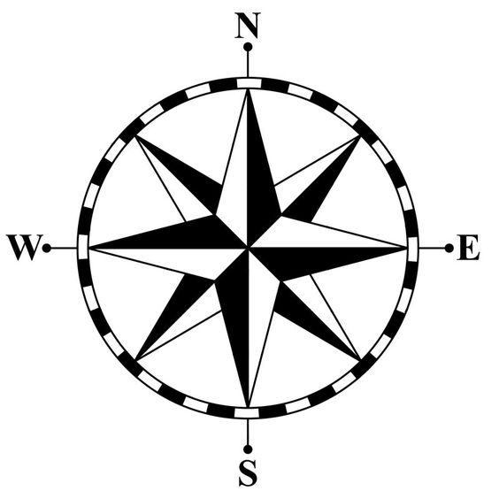

The New Expeditionary Society

Frontiers where none previously existed!
Planned blog posts:
- a new metaphysical sport
- negative space: carving out wordspace
- designing interesting prompts
- most played prompts
- skeleton
- The idea of a semantic transmorgification
Subjective and Objective ontologies (is this nonsense though?)
- GloVe is an objective depiction of the public psyche (is this really true?)
- Wikipedia is a subjective depiction of various subjects (okay, this is really true)
WORD GAMES ARE TERRIBLE BUT LANGUAGE IS GREAT
Golfing as a projection of internal creative philosophy
- What shifts do you see, what patterns in language?
Golfing as a tool to learn language spatially
- the human brain is very good at geographical location